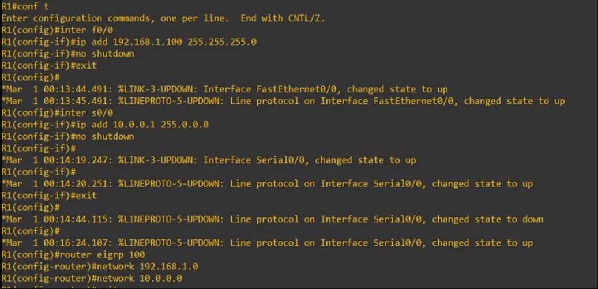
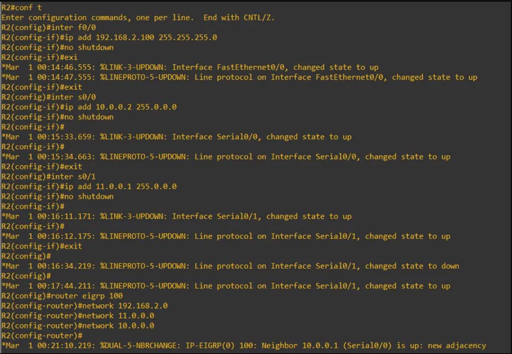
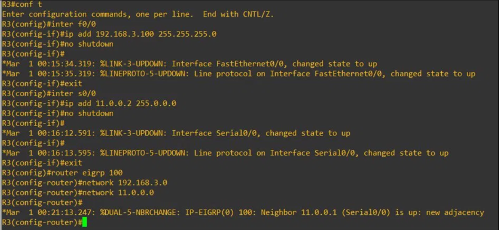
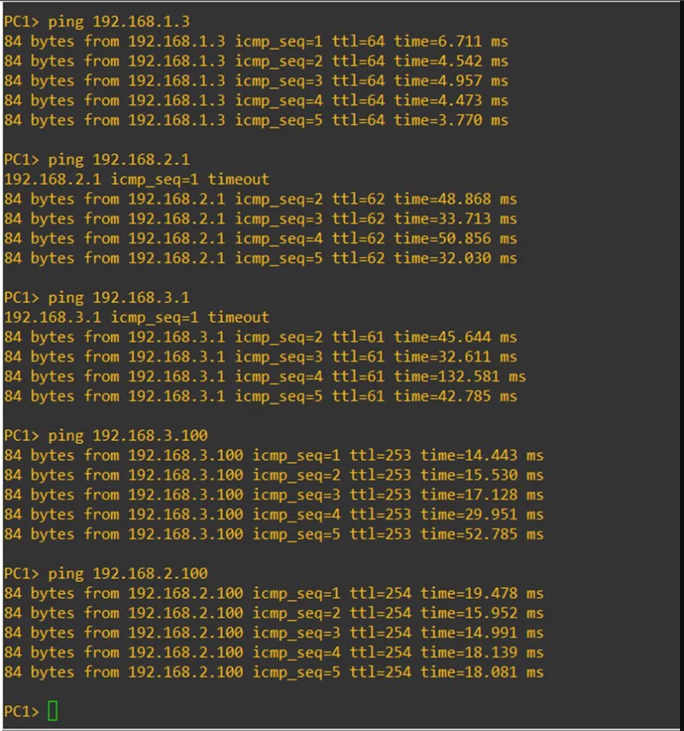

Accueil › Réseau › Routage › EIGRP (Dynamique)
EIGRP – Routage Dynamique sur GNS3
Objectif
Ce TD explore EIGRP (Enhanced Interior Gateway Routing Protocol), protocole de routage dynamique propriétaire Cisco. Comme OSPF, EIGRP découvre et propage automatiquement les routes — mais avec une syntaxe plus simple et un algorithme différent. La même topologie à 3 routeurs est utilisée, ce qui permet une comparaison directe entre les protocoles.
📖 Concepts clés EIGRP
- Protocole hybride : combine les avantages des protocoles à vecteur de distance et à état de lien
- Algorithme DUAL (Diffusing Update Algorithm) : garantit une convergence rapide et sans boucle
- AS (Autonomous System) : numéro identifiant le domaine EIGRP — tous les routeurs doivent avoir le même AS (ici AS 100)
- Classful par défaut : les réseaux sont déclarés en notation classful (ex:
192.168.1.0sans masque) - Métriques composites : bande passante, délai, charge, fiabilité (par défaut : BW + délai)
EIGRP vs OSPF – Comparaison
| Critère | OSPF | EIGRP |
|---|---|---|
| Type | État de lien (Link-State) | Hybride (Distance Vector + LS) |
| Algorithme | SPF / Dijkstra | DUAL |
| Standard | Ouvert (RFC 2328) | Propriétaire Cisco |
| Syntaxe réseau | network X.X.X.X 0.0.0.255 area 0 |
network X.X.X.X (plus simple) |
| Convergence | Rapide | Très rapide (DUAL) |
| Message d'adjacence | %OSPF-5-ADJCHG ... FULL |
%DUAL-5-NBRCHANGE ... is up |
Topologie du réseau
ℹ️ Même topologie que les TDs précédents (Routage Statique, Défaut, OSPF) : R1 → Switch1 (PC1–PC4), R2 central, R3 → Switch3 (PC7–PC8). Seule la configuration des routeurs change.

Configuration des VPCS
ℹ️ Adressage IP identique aux TDs précédents. Voir Routage par Défaut pour le détail des captures.


Configuration des routeurs
1Configuration de R1 – Interfaces + EIGRP AS 100

2Configuration de R2 – Routeur central EIGRP

%DUAL-5-NBRCHANGE: Neighbor 10.0.0.1 is up*Mar 1 00:21:10.219: %DUAL-5-NBRCHANGE: IP-EIGRP(0) 100: Neighbor 10.0.0.1 (Serial0/0) is up: new adjacency
3Configuration de R3 – EIGRP AS 100

*Mar 1 00:21:13.247: %DUAL-5-NBRCHANGE: IP-EIGRP(0) 100: Neighbor 11.0.0.1 (Serial0/0) is up: new adjacency
4Tests de connectivité
Pings depuis PC1 vers les réseaux distants (192.168.2.0 et 192.168.3.0) :

✅ Ce que j'ai appris
- Configurer EIGRP avec
router eigrp [AS]— le numéro d'AS doit être identique sur tous les routeurs du domaine - Déclarer les réseaux en notation classful sans wildcard mask (plus simple qu'OSPF)
- Interpréter le message d'adjacence EIGRP :
%DUAL-5-NBRCHANGE ... is up: new adjacency - Distinguer EIGRP (Cisco propriétaire, algorithme DUAL) d'OSPF (standard ouvert, algorithme SPF)
- Comprendre que malgré des syntaxes différentes, OSPF et EIGRP aboutissent au même résultat de routage dynamique